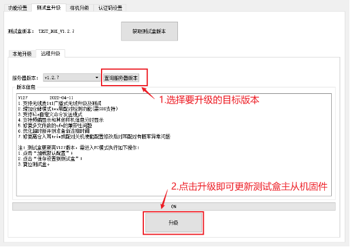
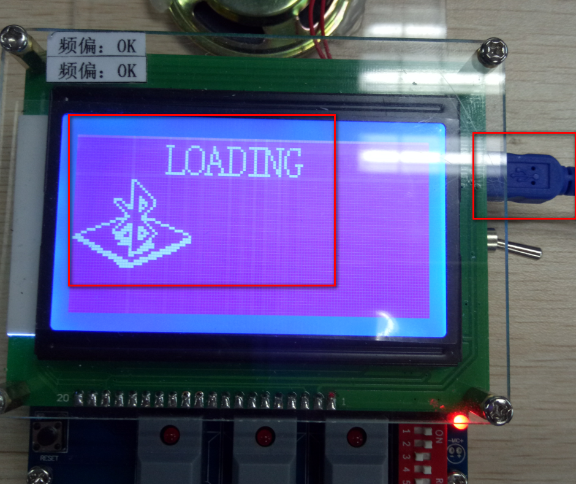
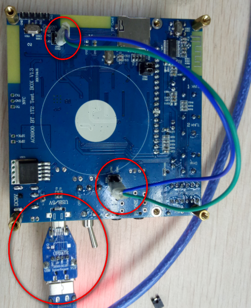

3.3. 测试盒固件升级
3.3.1. 远程升级
测试盒V122版本开始支持测试盒固件远程升级，在测试盒PC界面选择“测试盒升级”->“远程升级”即可进入远程升级界面，具体操作如下图所示：

若出现需要强制升级的情况（升级意外中断或断电情况），仍可按照本地升级中方法2中利用USB强制升级工具和跳线的方式逐一升级测试盒上三颗芯片的固件。同样，先选择固件版本，然后点击升级，PC工具会自动识别测试盒主从机芯片更新对应固件。
3.3.2. 本地升级
测试盒的固件升级首选方法1 ，当通过方法1升级遇到异常时，才采用方法2进行升级。
方法 1：
通过bt_test_box.exe软件升级，不需要跳线，直接插入usb口进行pc一拖二升级。(即测试盒跑的程序是AC690x_1T2测试盒V1.0.1及以上才支持此方法进行升级)，工具有读取版本号，如下图所示。
此种方法升级需测试盒正常跑起来，插入MiniUSB线并长按[按键4]（拨码开关左边）进入升级模式。


把AC690x_1T2测试盒bin_V1.0.1\jl_690x.bin拖入从机
把AC690x_1T2测试盒bin_V1.0.1\jl_690x_master.bin拖入主机。（打开文件后，点击升级测试盒,升级过程请勿断电），升级完100%之后重启测试盒，显示屏两个通道显示搜索中表示主从升级跑起来正常运行。
升级异常处理： 如果有通道显示初始化中表示从机升级异常，屏不显示表示主机升级异常。此时需要通过方法2的小工具和跳线进行一拖二测试盒强制固件升级。
Note
测试盒固件用方法1从V1.0.1\V1.0.2升级到V1.0.3，升完之后，主机跑的有问题，从机是正常的，
所以需要用方法2进行再次升级主机，从机不用再重复升级了
方法 2：
通过USB升级工具进行一拖二测试盒固件升级，测试盒有三个芯片，固件更新升级需要更新升级三个芯片，两个从机（同一个程序）、一个主机。

其中：
AC690x_1T2测试盒_从机Vx.x.x.exe 从机固件升级代码包
AC690x_1T2测试盒_主机Vx.x.x.exe 主机固件升级代码包
升级主机，接好usb升级工具，插入usb口，点击AC690x_1T2测试盒_主机Vx.x.x.exe下载。

分别升级两个从机，需要先拆除测试盒电路板背面的6个电阻（下图圈出的电阻均需拆除），然后通过杜邦线连接usb口(DM对从机1DM或DM2，DP对从机1DP或DP2接线)，测试盒背面接线(
分别下载从机1、从机2)如下图所示，接好usb升级工具，插入usb口，点击AC690x_1T2测试盒_从机Vx.x.x.exe下载。（三个芯片都升级完成后焊接上6个电阻）

